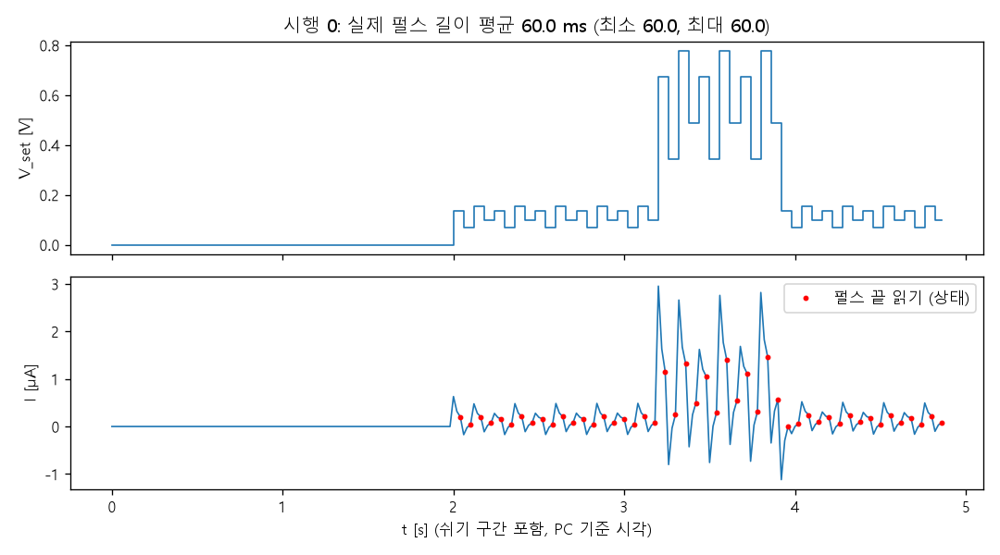
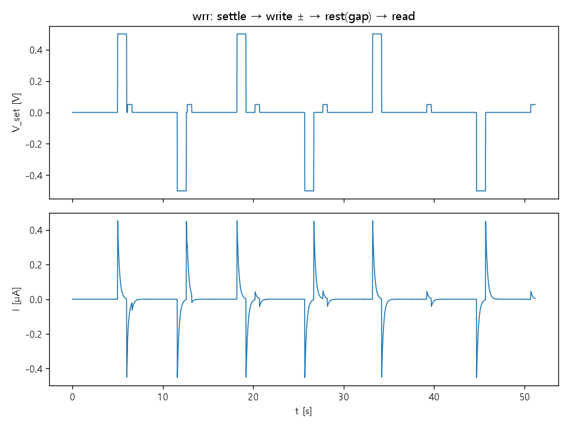
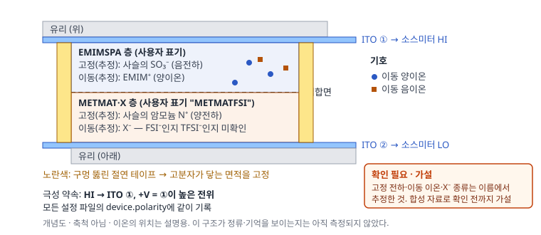
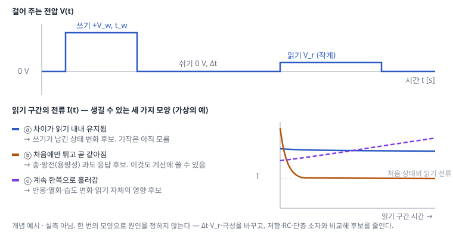
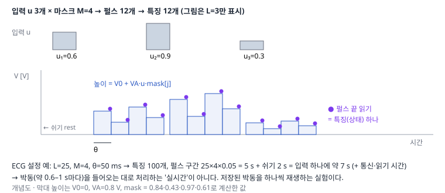

A. 계측기로 탐색하는 물리 레저버
소스미터로 소자에 펄스를 걸고, 남는 전류의 흔적이 계산에 쓸모 있는지 확인한다
- 준비물: Windows PC, Python 3.11 이상, 코드 묶음 zip. 소스미터·소자는 아직 필요 없습니다.
- 걸리는 시간: 30–60분.
- 끝나면 얻는 것: 모의 장비로 잰 기록 폴더, 시간별 전류 그래프 2장, "기억 있는 모의 소자 vs 저항"의 분류 결과.
- 실제 장비는 다음 단계: 소스미터를 쓰는 실행은 A0R(1–2시간)로 따로 나눴습니다. A0만 끝내도 그날은 끝입니다.
- 오늘의 완료 기준: A0-2의 명령 ①–⑧이 모두 예상대로 끝나고, 그래프에서 '펄스 끝 읽기' 점이 무엇인지 설명할 수 있으면 끝입니다.
- 남길 기록: 사용한 Python 버전, 각 명령의 마지막 출력 한 줄, 그래프 2장 (연구 노트에 붙이기).
이 프로젝트가 묻는 것: 내 소자의 전류에 과거 입력의 흔적이 남는가, 남는다면 그 흔적으로 시간 패턴을 구별할 수 있는가. 순서는 A0(장비 없이 모의) → A0R(소스미터로 저항·RC) → A1(소자 특성) → A2(작은 합성 과제) → A3(선택: ECG)입니다. A1까지 기록이 남으면 수준 2이고, 기억이나 성능 향상이 보이지 않아도 그 단계는 끝난 것입니다.
A0. 모의 장비로 한 바퀴 (장비 없음, 30–60분)
A0-1. 준비: 폴더와 Python
zip을 받아 원하는 곳(예: 바탕화면)에 압축 풀기를 합니다. 생기는 폴더:
ion-projects-code/ README.md 코드 묶음 설명과 검증 상태 python/ Python 파일과 설정 예시 ← 여기서 명령을 입력 firmware/ B·C에서 보드에 올리는 아두이노 코드파일 탐색기로
ion-projects-code\python폴더를 연 뒤, 위쪽 주소 창을 클릭하고cmd를 입력해 Enter를 누릅니다. 그 폴더 위치에서 명령 프롬프트(검은 창)가 열립니다.python --version을 입력해 3.11 이상인지 봅니다. "명령을 찾을 수 없음"이 나오면 python.org에서 설치하고, 설치 첫 화면의 "Add python.exe to PATH"를 체크합니다.python -m pip install -r requirements.txt— 필요한 패키지를 설치합니다 (몇 분). 다른 Python 작업과 섞이는 것이 걱정되면 먼저python -m venv .venv→.venv\Scripts\activate로 이 폴더 전용 환경(virtual environment)을 만들 수 있습니다.
A0-2. 모의 장비로 한 바퀴
모의 장비(mock)는 실제 소스미터 대신 정해진 식으로 전류를 만들어 주는 가짜 장비입니다. 코드 흐름을 익히기 위한 것이고, 모의 결과는 실제 소자에 대해 아무것도 말해 주지 않습니다.
아래 명령을 python 폴더에서 열린 명령 프롬프트에 하나씩 붙여 넣습니다. 각 명령 아래에 성공했을 때 보이는 것과, 다르면 확인할 곳을 적었습니다.
① 코드 점검
python run_tests.py성공: 마지막 줄 모두 통과 (12개). 다르면: 패키지 설치(A0-1의 4)를 다시.
② 연습용 입력 만들기 → task.npz (입력 40개와 정답)
python tasks.py timing task.npz --n 20성공: 시행 40개 (클래스 0: 앞쪽, 1: 뒤쪽) … 끝만 읽기 칸 [8, 9, 10, 11]. 다르면: 명령 프롬프트가 python 폴더에서 열렸는지.
③ 모의 측정 5개만 → runs/practice_mem/ 폴더
python measure_seq.py config_example.json task.npz runs/practice_mem --mock --limit 5성공: 시행 4 저장 (5/40)에서 멈춤.
④ 같은 명령에서 --limit 5만 빼고 이어서
python measure_seq.py config_example.json task.npz runs/practice_mem --mock성공: 이어서 측정: 5/40 … → 시행 39 저장 (40/40). 설정 파일을 바꾼 뒤 같은 폴더로 이어 하면 거부됩니다 (조건이 다른 측정이 섞이지 않게 하는 의도된 동작).
⑤ 시행 하나의 그래프 → runs/practice_mem/trial_00000.png
python plot_run.py runs/practice_mem --trial 0성공: 그래프: …trial_00000.png. 파일 탐색기에서 열어 아래 예시와 비슷한지 봅니다.
⑥ 기억 없는 모의 저항으로 같은 측정 → runs/practice_res/
python measure_seq.py config_example.json task.npz runs/practice_res --mock --mock-model resistor⑦·⑧ 끝만 읽고 분류하기
python readout.py runs/practice_mem/checkpoint.npz task.npz --out practice_mem.joblib --end-only
python readout.py runs/practice_res/checkpoint.npz task.npz --out practice_res.joblib --end-only성공: 첫 줄은 균형 정확도 1.00 (찍기 = 0.50) 근처, 둘째 줄은 0.5 근처(예: 0.4–0.65). 시험이 12개뿐이라 모의 저항도 0.6 정도는 우연히 나올 수 있습니다.
결과 읽기 (⑦·⑧):
--end-only는 마지막 4칸 동안의 전류만 씁니다. 그 4칸의 입력은 두 클래스가 똑같으므로, 입력만 봐서는 찍기(0.50)밖에 안 됩니다.- 기억이 있는 모의 소자는 앞에서 받은 입력의 흔적이 남아 높게 나오고, 모의 저항은 찍기 근처입니다. 이 차이를 직접 보는 것이 A0의 목적입니다.
- 라벨 섞기 확인은 정답을 무작위로 섞어 같은 계산을 한 값입니다. 찍기 근처가 아니면 분석 어딘가에서 정답이 새고 있다는 신호입니다.
.joblib파일에는 학습된 표준화 값·가중치·결과가 들어 있고, 나중에 B의export_mcu.py가 읽습니다. 직접 열어 볼 필요는 없습니다.

A0-3. 모의 RC로 "기억처럼 보이는 신호" 보기
직렬 RC는 저항 R과 커패시터 C를 일렬로 이은 것입니다. 시간상수 τ = R × C이고, 아래 모의 장비는 R = 1 MΩ, C = 1 µF(τ = 1 s)로 계산합니다. 실물 연결은 A0R-3에서 합니다.
아래 명령으로 쓰기–쉬기–읽기를 모의 RC에 겁니다:
python a1_tests.py wrr config_example.json runs/wrr_rc_mock --mock --mock-model series_rc --gaps 0.1,1,5- 이 명령은 이 순서로 전압을 겁니다: 0 V 5초(settle) → 쓰기 ±0.5 V 1초 → 0 V 쉬기(gap) → 읽기 0.05 V 0.5초. 쉬기 0.1·1·5초마다 + 쓰기와 − 쓰기를 한 번씩 합니다.
- 화면의
I_read_first는 읽기 시작 직후 전류입니다. 모의 RC에서는 쉬기가 0.1 s일 때 + 쓰기 뒤 약 −0.23 µA, − 쓰기 뒤 약 +0.32 µA로 크게 다르고, 5 s에서는 둘 다 약 +0.045 µA로 거의 같아집니다. - 뜻: 커패시터에 남은 전하가 쉬는 동안 τ ≈ 1 s로 빠져나갑니다. 커패시터만으로도 '쓰기 극성을 기억하는 것처럼' 보이는 결과가 나옵니다. 이 모양을 알아 두면 A1에서 소자 결과를 볼 때 비교할 기준이 생깁니다.

A0R. 실제 소스미터로 저항과 RC (1–2시간)
- 준비물: 소스미터(이 코드는 Keithley 2400 계열 기준), 연결 케이블(GPIB–USB 어댑터 등), 1 MΩ 저항, 1 µF 필름 커패시터, 악어 클립. 소자는 아직 필요 없습니다.
- 끝나면 얻는 것: 저항과 RC의 실측 그래프, 실제 펄스 길이 기록. A0의 모의 그래프와 나란히 놓습니다.
- 완료 기준: 저항에서 전류 = 전압 ÷ 1 MΩ이 맞고, RC에서 쓰기 극성에 따라 읽기 전류가 달라졌다가 쉬기가 길면 같아지는 것을 실측으로 봤으면 끝입니다.
A0R-1. 실제 소스미터와 대화하기
- 소스미터 뒷면에서 연결 방식(USB·GPIB·LAN·RS-232)을 확인합니다. Keithley 2400처럼 GPIB만 있으면 GPIB–USB 어댑터가 필요합니다 (NI-VISA가 인식하는 제품. 연구실에 남는 것이 있는지 먼저 물어보세요).
- NI-VISA(NI 홈페이지, 무료)를 설치하고, 같이 설치되는 NI MAX를 열어 "장치와 인터페이스"에서 장비 주소를 찾습니다. 예:
GPIB0::24::INSTR. 장비가 안 보이면 장비 앞면 메뉴에서 통신 방식·GPIB 주소를 확인합니다. config_example.json을 복사해config_real.json으로 저장하고 메모장으로 열어 바꿉니다:"addr"→ NI MAX에서 본 주소 (바꿀 것)"compliance_A","v_limit_V"→ 이번 실험의 전류 제한·전압 상한 (바꿀 것)"device"의"id","env"→ 시료 이름·측정 환경 (바꿀 것)"mock"줄은 실제 장비에서는 쓰이지 않습니다.
smu.py는 Keithley 2400 계열 기준입니다. 2450·2600 시리즈는 명령 체계가 달라 이 코드로는 아직 잴 수 없습니다. 2450은 설명서에서 2400 호환 명령 모드를 고를 수 있는지 먼저 확인하세요 미확인. 연결이 되면 2400 계열이 아닙니다 오류 없이 A0R-2가 돌아가야 합니다. 이 드라이버가 하는 일:
| 동작 | 이유 |
|---|---|
연결만으로는 출력이 켜지지 않고 enable()을 불러야 켜짐 |
설정이 끝나기 전에 전압이 걸리지 않게 |
with 문이 끝나거나 오류·Ctrl+C가 나면 0 V → 출력 OFF를 시도하고, 실패하면 화면에 알림 |
오류가 나도 출력이 켜진 채 남지 않게 |
계획 상한(v_limit_V)을 넘는 전압 요청은 거부 |
오타 한 번으로 큰 전압이 걸리지 않게 |
| 매 측정마다 전류 제한(compliance)에 걸렸는지 기록 | compliance는 전류가 넘지 않게 장비가 전압을 낮추는 동작일 뿐, 프로그램을 멈추지 않으므로 |
USB·GPIB 연결이 끊기면 PC는 장비를 끌 수 없습니다. 장비 앞면 OUTPUT 버튼 위치를 알아 두고, 이상하면 직접 끕니다. compliance 상태 비트 번호도 2400 설명서의 상태 워드 표에서 한 번 확인하세요 (코드에 표시해 둠, 실물 검증 대기).
A0R-2. 저항(1 MΩ)으로 측정 흐름 확인
연결: 소스미터 앞면 HI 단자 → 악어 클립 → 저항 한쪽 다리, LO 단자 → 저항 다른 쪽 다리. 저항은 방향이 없습니다.
- 계산 예시: 0.5 V를 걸면 I = 0.5 / 1,000,000 = 0.5 µA.
- 이번 입력이 실제로 거는 전압:
task.npz+config_example.json의 인코딩은 V = 0.8 × u × mask이므로 펄스 높이가 약 0.07–0.78 V입니다. 1 MΩ이면 전류는 약 0.07–0.78 µA입니다.
python measure_seq.py config_real.json task.npz runs/r1M --limit 3
python plot_run.py runs/r1M --trial 0- 예상: 그래프의 전류 계단이 전압 계단과 같은 모양이고, 크기가 전압 / 1 MΩ입니다. 제목의 "실제 펄스 길이"가 설정 50 ms보다 얼마나 긴지 적습니다. PC가 명령을 하나씩 보내는 방식이라 보통 수십 ms 길어집니다.
- 다르면: 전류가 0 → 연결. 값이 튐 →
i_range_A고정. 시간 초과 → 주소·케이블. - 이 단계의 기록: 장비 모델, 주소, NPLC, 실제 펄스 길이, 그래프.
PC가 "전압 바꾸기 → 시간이 될 때까지 읽기"를 반복하므로, 실제 펄스 길이 = 설정값 + 통신·측정 시간(NPLC로 정해지는 측정 구간 포함)입니다. 모든 결과에는 설정 θ가 아니라 기록된 실제 펄스 길이를 같이 적습니다. 더 짧고 정확한 펄스가 필요하면 장비 내부 기능(2400 리스트 스윕·트리거, 2450 Trigger Model, 2600 TSP)으로 옮기고, 그 타이밍도 측정으로 확인합니다.
A0R-3. 직렬 RC 실측
연결: HI → 1 MΩ 저항 → 1 µF 필름 커패시터(극성 없음) → LO. 저항과 커패시터를 일렬로 잇습니다 (직렬, series). 시간 상수 τ = R × C = 1 s.
A0-3의 명령에서 config_example.json 대신 config_real.json을 쓰고 --mock --mock-model series_rc를 빼고 실행합니다:
python a1_tests.py wrr config_real.json runs/wrr_rc_real --gaps 0.1,1,5- 예상: A0-3의 모의 숫자(쉬기 0.1 s에서 + 쓰기 뒤 약 −0.23 µA, − 쓰기 뒤 약 +0.32 µA, 5 s에서 둘 다 약 +0.045 µA)와 부호·크기 순서가 비슷합니다. 실제 부품은 허용 오차(저항 1%, 커패시터 5–10%)와 장비의 실제 펄스 길이 때문에 숫자가 조금 다릅니다.
- 다르면: 전류가 저항만 있을 때와 같음 → 커패시터 연결. 부호가 반대 → HI·LO 방향.
A1. 소자 특성 측정
목표: 내 소자가 어떤 전압·전류·시간 규모에서 동작하는지, 과거 입력의 흔적이 남는지를 대조군과 함께 기록합니다. 기대한 기억이 보이지 않아도 이 기록이 결과입니다.

- 사용자 표기 "METMATFSI"의 이동 음이온이 FSI⁻인지 TFSI⁻인지는 아직 확인하지 않았습니다. 이 사이트는 확인 전까지 X⁻로 씁니다.
- 각 층의 고정 전하 부호(EMIMSPA = 고정 SO₃⁻ / 이동 EMIM⁺, METMAT·X = 고정 암모늄 N⁺ / 이동 X⁻)는 이름에서 추정한 것입니다. 합성 자료로 확인한 뒤 그림을 고칩니다.
소자를 만들 때 기록할 것
- 활성 면적은 구멍 뚫은 절연 테이프로 고정합니다 (그림 ①의 노란 부분). 위·아래 ITO를 어긋나게 겹쳐 전선 붙일 자리를 남깁니다.
- 극성 약속: 소스미터 HI → ITO ①(EMIMSPA 쪽), LO → ITO ②. 모든 설정 파일의
device.polarity에 적습니다. - 조건별 소자 3개 이상. 두께, 활성 면적, 가교제 비율, 광경화·rinsing·건조 조건, 측정 때 온도·습도, 제작 후 경과 시간.
- 대조 소자: 한 층만 있는 소자(ITO/EMIMSPA/ITO, ITO/METMAT·X/ITO). 흔적이 접합에서 생기는지, 한 층 안·전극 계면에서 생기는지 가르는 데 씁니다.
A1-1. 쓸 전압 범위 찾기
python a1_tests.py iv config_real.json runs/iv_dev01_02 --vmax 0.2 --step 0.02 --dwell 0.05
python a1_tests.py iv config_real.json runs/iv_dev01_04 --vmax 0.4 --step 0.02 --dwell 0.05- 결과:
.npz(모든 읽기),.json(조건),.png(I–V). compliance를 작게(예: 10–100 µA) 두고--vmax를 한 단계씩 넓힙니다. - 넓힐 때마다 처음의 작은 스윕(0.2 V)을 다시 재서 같은지 확인합니다. 달라졌다면 직전 범위에서 소자가 바뀐 것(전기화학 반응, ITO 손상 등 가능)이므로 그 아래까지만 씁니다. 기포·변색·박리도 눈으로 봅니다.
- 여기 적힌 전압·전류 숫자는 모두 예시입니다. 내 소자의 범위는 이 측정으로 정합니다.
A1-2. 스윕 속도를 바꾼 I–V
같은 범위에서 --dwell(한 단계 머무는 시간)을 0.02, 0.1, 0.5초로 바꿔 세 번 잽니다. 고리 모양이 속도에 따라 바뀌면 그 시간 규모의 느린 과정이 있다는 뜻입니다. 1 MΩ 저항(고리 없음)과 직렬 RC(속도에 따라 고리)도 같은 명령으로 재서 나란히 놓습니다.
A1-3. 쓰기–쉬기–읽기

python a1_tests.py wrr config_real.json runs/wrr_dev01 --vw 0.5 --tw 1 --vr 0.05 --tr 0.5 --gaps 0.1,0.3,1,3,10- 전압 순서는 그림 ②와 같습니다 (A0-3·A0R-3의 명령과 같은 파일).
--vw·--vr은 A1-1에서 정한 범위 안으로 고칩니다. 읽기 전압--vr은 I–V에서 거의 직선인 작은 값으로. I_read_first(읽기 직후)와I_read_late(읽기 후반 평균)를 + 쓰기 / − 쓰기로 비교하고, 쉬기 시간에 따라 차이가 어떻게 줄어드는지 봅니다.- 같은 명령으로 직렬 RC, 1 MΩ 저항, 한 층 소자도 잽니다.
| 관측 | 가능한 원인 (여러 개가 동시에 있을 수 있음) | 후보를 줄이는 대조 실험 |
|---|---|---|
| 차이가 읽기 내내 유지됨 (그림 ② ⓐ) | 이온 분포·저항 상태 변화, 계면 분극의 느린 해소, 전기화학 반응 생성물 | 쉬기·읽기 전압 바꾸기, 한 층 소자, 반복 후 처음 상태로 돌아오는지 |
| 처음에만 튀고 같아짐 (ⓑ) | 전극 계면·벌크의 충·방전(용량성 과도 응답) | A0R-3의 RC와 모양 비교, 읽기 구간을 길게(--tr) |
| 한쪽으로 계속 흘러감 (ⓒ) | 반응·열화, 습도·온도 변화, 읽기 자체가 상태를 바꿈(read disturbance) | 쓰기 없이 읽기만 반복, 환경 기록, 읽기 전압 낮추기 |
"멤리스터다", "이온이 이동해서다" 같은 결론은 이 표의 다른 후보를 대조 실험으로 줄인 뒤에 씁니다. 용량성 과도 응답(ⓑ)도 시간 정보를 담기 때문에 계산에 쓸 수 있습니다. 흔적이 어떤 기작으로 생겼는지와, 그 흔적을 계산에 쓸 수 있는지는 별개의 질문입니다.
A1-4. 짝펄스: 두 자극 사이 간격의 흔적
python a1_tests.py ppf config_real.json runs/ppf_dev01 --vp 0.5 --tp 0.2 --gaps 0.05,0.1,0.2,0.5,1,2,5순서: 0 V 쉬기 → 펄스 1 → 0 V(간격) → 펄스 2. 그래프 위쪽은 간격에 따른 두 번째/첫 번째 펄스 끝 전류 비입니다. 간격이 짧을수록 비가 1에서 멀어지면 간격 정보가 전류에 남는다는 뜻입니다. 직렬 RC로도 같은 명령을 돌려 비교합니다. 간격 0.05 s처럼 짧은 값은 PC 타이밍 한계(A0R-2)에 걸리므로 기록된 시각을 확인합니다.
A1-5. EIS (퍼텐쇼스탯이 있으면)
이 코드 묶음에는 EIS 스크립트가 없습니다. 퍼텐쇼스탯 자체 소프트웨어로 측정합니다.
- 임피던스 스펙트럼의 반원 지름을 항상 고분자 벌크 저항으로 읽을 수는 없습니다. 이 소자에는 두 고분자 벌크, 접합 계면, 두 전극 계면이 있어 반원이 겹치거나 여러 개로 나타날 수 있습니다.
- 진폭을 바꿔(예: 5, 10, 20 mV) 스펙트럼이 같은지(선형성), 측정 전후가 같은지(정상성)를 먼저 봅니다.
- 등가 회로는 가장 단순한 것부터 맞추고, 더 복잡한 모델을 쓰려면 한 층 소자·두께를 바꾼 소자에서 각 성분이 예상대로 변하는지로 근거를 댑니다. 맞춘 값은 "이 모델·이 주파수 범위에서의 값"으로 보고합니다.
A1-6. 특성표
| 항목 | 값 | 지지하는 관측 (파일 이름) | 아직 배제하지 못한 설명 |
|---|---|---|---|
| 쓸 전압 범위 | A1-1 | ||
| 그 범위의 전류 최소·최대 | |||
| 흔적이 줄어드는 시간 규모 (A1-3, A1-4) | 지수 하나로 맞는지도 적기 | ||
| 100회 반복 후 변화 | |||
| 소자 간 편차 (3개 이상) | |||
| 온도·습도 의존 |
이 표의 전압·전류 범위가 B의 부품 선택을 정합니다.
A2. 작은 합성 과제: "끝만 읽어도 앞을 기억하는가"
A0-2의 과제를 실제 소자로 합니다. 정답이 분명한 작은 과제로 "흔적이 분류에 쓸모 있는가"를 묻습니다.

- 입력 12칸 중 높은 값 3개가 앞쪽(0–3칸)이면 클래스 0, 뒤쪽(4–7칸)이면 클래스 1. 8–11칸은 모든 시행에서 같은 낮은 값입니다.
- 각 칸 = 마스크 4개의 펄스 (그림 ⑤).
--end-only는 8–11칸 동안의 전류 16개만 씁니다.
python tasks.py timing task_a2.npz --n 40
python measure_seq.py config_real.json task_a2.npz runs/a2_dev01 --limit 10
python plot_run.py runs/a2_dev01 --trial 0
python measure_seq.py config_real.json task_a2.npz runs/a2_dev01
python readout.py runs/a2_dev01/checkpoint.npz task_a2.npz --out a2_dev01.joblib --end-only
python readout.py runs/a2_dev01/checkpoint.npz task_a2.npz --out a2_dev01_full.joblib먼저 10시행만 재고 그래프·compliance·실제 펄스 길이를 확인한 뒤 나머지를 이어서 잽니다. 같은 과제를 1 MΩ 저항, 직렬 RC, 한 층 소자로도 잽니다 (폴더 이름만 바꿔서).
| 측정 | 끝만 읽기 균형 정확도 | 전체 읽기 균형 정확도 | 라벨 섞기 확인 |
|---|---|---|---|
| 입력 그대로 | 0.5 (구조상) | ||
| 1 MΩ 저항 | |||
| 직렬 RC | |||
| 한 층 소자 | |||
| 접합 소자 |
- 시행이 적으면 우연히 0.6–0.7이 나올 수 있습니다 (A0-2의 모의 저항처럼). 같은 측정을 다른 날 한 번 더 하고, 두 결과가 같은 방향인지 봅니다.
- 직렬 RC도 0.5보다 높게 나올 수 있습니다. 그렇다면 "용량성 흔적만으로도 이 과제가 풀린다"는 뜻이고, 소자가 RC와 무엇이 다른지가 다음 질문입니다.
기억 용량(MC, memory capacity) — 같이 재면 좋은 지표. 무작위 입력 600개를 한 줄로 걸고, 지금 상태로 d걸음 전 입력을 맞히는 정도를 봅니다.
python tasks.py mc mc_input.npz --n 600
python measure_seq.py config_real.json mc_input.npz runs/mc_dev01
python mc.py runs/mc_dev01/checkpoint.npz mc_input.npz --M 4mc.py는 앞 50걸음을 버리고(washout), 앞 2/3로 학습·뒤 1/3로 평가하며, 독립 무작위 목표로 같은 계산을 한 null 값보다 큰 부분(MC_excess)만 셉니다. MC는 "이 입력 통계에서 선형으로 꺼낼 수 있는 과거 정보의 양"이지 좋은 레저버의 인증서가 아닙니다.
A3. (선택) ECG 박동으로 확장
A2에서 수준 2 이상이 되었을 때 진행합니다.
데이터와 라벨. PhysioNet의 MIT-BIH 부정맥 DB. 표준(AAMI) 묶음으로 클래스 0 = N 묶음(정상 N, 좌각차단 L, 우각차단 R, 심방·접합부 이탈 e·j = "비이소성 박동"), 클래스 1 = V 묶음(심실조기수축 V, 심실 이탈 E = "심실 이소성 박동")을 가릅니다. "정상 대 비정상"이 아니며, 클래스 이름은 결과 파일의 class_names에도 저장됩니다.
분할. 관행적 분할(DS1 학습 / DS2 시험)을 쓰되, PhysioNet 설명에 따르면 201과 202는 같은 사람의 기록입니다. ecg_prep.py는 기본으로 202를 시험에서 빼고, 사람 번호를 groups에 넣어 내부 교차검증도 사람 단위로 나눕니다.
전처리는 '오프라인' 경로입니다. 전체 기록·전문가 R파 주석·앞뒤를 보는 필터를 씁니다. 실시간 장치는 R파를 스스로 찾고 미래 샘플을 볼 수 없으므로 다른 과제입니다. 360 Hz → 36 Hz로 줄일 때 안티앨리어싱 필터가 들어간 resample_poly를 쓰고, 이때 18 Hz 이상 성분이 사라져 QRS의 날카로운 모양·폭 정보가 무뎌집니다. 그래서 이 결과는 "36 Hz로 줄인 박동 모양에서의 구별"이고, 원 신호 전체를 쓴 분류와 직접 비교할 수 없습니다. 리드는 이름이 MLII인 채널을 고릅니다.
시간. 박동 하나 = 25칸 × 마스크 4 × θ 50 ms = 5초 + 쉬기 2초 ≈ 7초 (그림 ⑤). 600박동이면 명목 70분에 통신·읽기 시간이 더해집니다. 저장된 박동을 하나씩 재생하는 실험이고, 실시간 처리가 아닙니다.
python ecg_prep.py ecg_set.npz --train 200 --test 100
python measure_seq.py config_real.json ecg_set.npz runs/ecg_dev01 --limit 10
python measure_seq.py config_real.json ecg_set.npz runs/ecg_dev01
python readout.py runs/ecg_dev01/checkpoint.npz ecg_set.npz --out ecg_dev01.joblib첫 줄은 PhysioNet에서 기록을 내려받습니다 (인터넷 필요, 이 줄은 아직 실행 검증하지 않음). readout.py는 표준화를 분류기와 한 Pipeline에 넣어 교차검증 fold 안에서만 맞추고, 사람 단위 GroupKFold로 정규화 강도를 고르며, 시험 데이터는 마지막에 한 번만 씁니다. 비교는 A2와 같은 줄(입력 그대로, 저항, RC, 소자) + 같은 특징 수의 디지털 기준 모델입니다. 측정 조건·특징 수·분할을 표에 같이 적고, 빈칸은 측정하기 전까지 비워 둡니다.
정확도가 낮을 때 원인을 τ 하나로 정하지 않습니다. 인코딩(θ, 마스크, 전압 범위), 다운샘플링으로 잃은 정보, 소자 drift, 시행 수, 라벨 묶음의 어려움이 모두 후보입니다.
문제 해결
| 증상 | 확인 순서 |
|---|---|
python을 찾을 수 없음 |
Python 설치 때 "Add to PATH" 체크, 명령 프롬프트 다시 열기 |
No such file |
명령 프롬프트가 python 폴더에서 열렸는지 (A0-1의 2) |
| 장비 목록이 비어 있음 | NI MAX에 보이는지 → 어댑터 드라이버 → 장비 통신 설정(주소·인터페이스) |
2400 계열이 아닙니다 |
모델이 다름 → A0R-1의 모델 안내. 이 코드는 2400 계열만 지원 |
| 전류가 compliance 값에 붙음 | 전압 낮추기, 두 ITO가 직접 닿았는지(합선) |
| 이어서 하기가 거부됨 | 설정·입력 파일이 바뀜 → 새 폴더 이름으로 (의도된 동작) |
(선택) 다른 소스미터 모델로 옮길 때 AI에게 묻는 법
첨부한 smu.py는 Keithley 2400용이야. 내 장비는 [모델]이고 [연결 방식]으로 연결해.
같은 클래스 구조(open/enable/set_v/read/hold/close, 출력 자동 켜짐 없음, close에서 0 V→OFF를
단계별로 시도하고 실패 기록, compliance 상태 기록)를 유지하면서 이 모델 명령으로 바꿔 줘.
바꾼 명령마다 설명서의 어느 절을 근거로 했는지 적고, 확실하지 않은 것은 표시해 줘.